This article focuses on using bslib to create the user
interface (UI) for Shiny
dashboards. In the next getting started
article, we’ll also cover how these dashboard components, layout
helpers, etc. be also be used in isolation inside of any Bootstrap
project (e.g., R Markdown, pkgdown, etc), not just Shiny
dashboards.
Running examples
To run the Shiny app examples in this article, consider copy/paste/run/edit the code in this RStudio Cloud project.
Hello dashboards
Quickly create a dashboard by providing a title,
sidebar, and main area contents to
page_sidebar().
library(shiny)
library(bslib)
ui <- page_sidebar(
title = "My dashboard",
sidebar = "Sidebar",
"Main content area"
)
shinyApp(ui, function(input, output) {})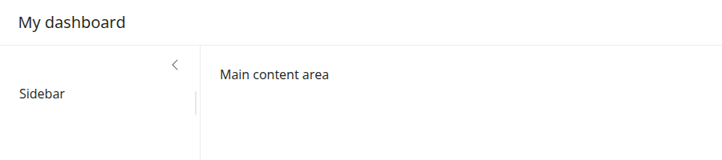
Both the sidebar and main content areas can hold any
arbitrary collection of UI elements, but it’s good practice to keep
inputs in the sidebar and outputs in the main content area.
Also, consider wrapping outputs in a card() and
sidebar contents in a sidebar() object to add
a title and/or customize styling, positioning, etc.
Let’s start with a basic yet interesting example of a customizable histogram with numeric variables from the palmerpenguins dataset.
library(ggplot2)
data(penguins, package = "palmerpenguins")
ui <- page_sidebar(
title = "Penguins dashboard",
sidebar = sidebar(
title = "Histogram controls",
varSelectInput(
"var", "Select variable",
dplyr::select_if(penguins, is.numeric)
),
numericInput("bins", "Number of bins", 30)
),
card(
card_header("Histogram"),
plotOutput("p")
)
)
server <- function(input, output) {
output$p <- renderPlot({
ggplot(penguins) +
geom_histogram(aes(!!input$var), bins = input$bins) +
theme_bw(base_size = 20)
})
}
shinyApp(ui, server)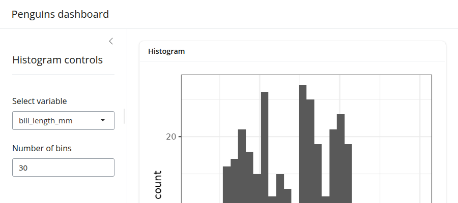
Throughout the rest of this article, we’ll cover how to layout
multiple outputs, add multiple pages, and more. For that, it’ll be
useful to have some reusable outputs and inputs. So, let’s create a list
of cards, each with a plotOutput() container
for a numeric variable of interest, plus a color_by input
control to color the histograms by species,
island, or sex.
cards <- list(
card(
full_screen = TRUE,
card_header("Bill Length"),
plotOutput("bill_length")
),
card(
full_screen = TRUE,
card_header("Bill depth"),
plotOutput("bill_depth")
),
card(
full_screen = TRUE,
card_header("Body Mass"),
plotOutput("body_mass")
)
)
color_by <- varSelectInput(
"color_by", "Color by",
penguins[c("species", "island", "sex")],
selected = "species"
)Now, for a quick example, let’s pass color_by directly
to sidebar and the cards to the main content
area. By default, each card is placed in a new row, and the cards are
allowed to grow/shrink to fit the browser window (if the browser window
is wide enough). In the next section, we’ll cover how to customize the
layout.
ui <- page_sidebar(
title = "Penguins dashboard",
sidebar = color_by,
!!!cards
)
server <- function(input, output) {
gg_plot <- reactive({
ggplot(penguins) +
geom_density(aes(fill = !!input$color_by), alpha = 0.2) +
theme_bw(base_size = 16) +
theme(axis.title = element_blank())
})
output$bill_length <- renderPlot(gg_plot() + aes(bill_length_mm))
output$bill_depth <- renderPlot(gg_plot() + aes(bill_depth_mm))
output$body_mass <- renderPlot(gg_plot() + aes(body_mass_g))
}
shinyApp(ui, server)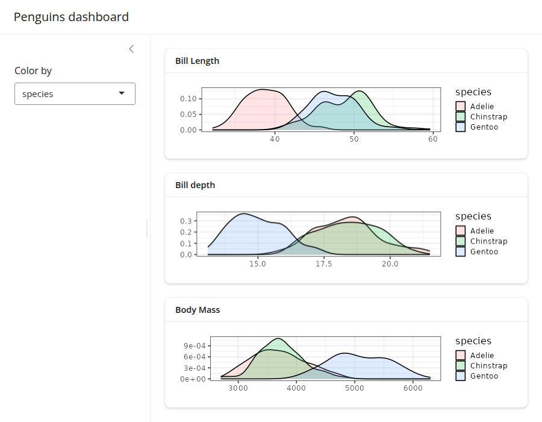
Layouts
Multi-column
Create multi-column layouts with layout_columns(). If no
col_widths are specified, it divides space evenly among the
UI elements in a row.
ui <- page_sidebar(
title = "Penguins dashboard",
sidebar = color_by,
layout_columns(cards[[1]], cards[[2]]),
cards[[3]]
)
shinyApp(ui, server)A vector of column widths may also be supplied to allocate a given
number of columns (out of 12) to each element. And, if elements go
beyond the 12 column mark, they get wrapped onto a new row. By default,
all row heights are equal, but this can be customized with the
row_heights argument (numeric values are interpreted as
fractional units, but fixed length units are also supported).
ui <- page_sidebar(
title = "Penguins dashboard",
sidebar = color_by,
layout_columns(
col_widths = c(4, 8, 12),
row_heights = c(1, 2),
cards[[1]],
cards[[2]],
cards[[3]]
)
)
shinyApp(ui, server)Negative col_widths may also be provided to easily
create negative/empty space:
ui <- page_sidebar(
title = "Penguins dashboard",
sidebar = color_by,
layout_columns(
col_widths = c(4, 8, -2, 8, -2),
cards[[1]],
cards[[2]],
cards[[3]]
)
)
shinyApp(ui, server)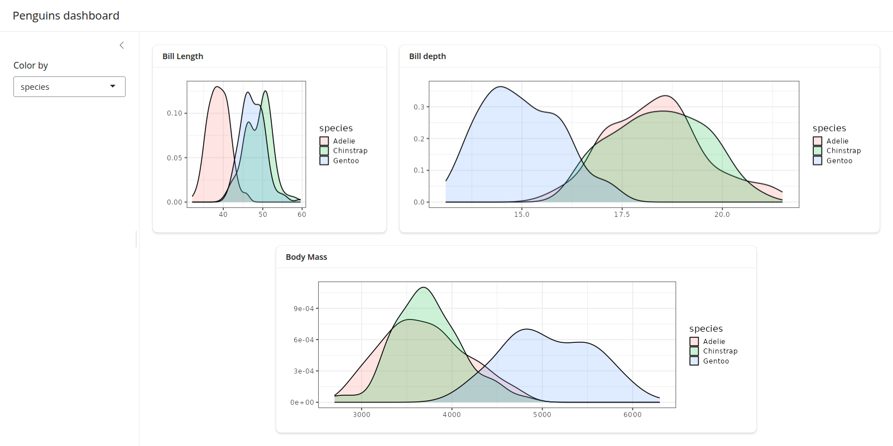
Although we don’t show it here, layout_columns() also
supports different col_widths and row_heights
at different breakpoints(). This is useful for creating
responsive layouts that adapt to different screen sizes. To learn more,
visit layout_columns().
Multi-page
To add multiple pages, change page_sidebar() to
page_navbar() and use nav_panel() to supply
the title and content for each page. Here you can also take advantage of
bslib’s nav_spacer() and
nav_item() to control the alignment and UI elements to the
navbar (e.g., an external hyperlink).
ui <- page_navbar(
title = "Penguins dashboard",
sidebar = color_by,
nav_spacer(),
nav_panel("Bill Length", cards[[1]]),
nav_panel("Bill Depth", cards[[2]]),
nav_panel("Body Mass", cards[[3]]),
nav_item(tags$a("Posit", href = "https://posit.co"))
)
shinyApp(ui, server)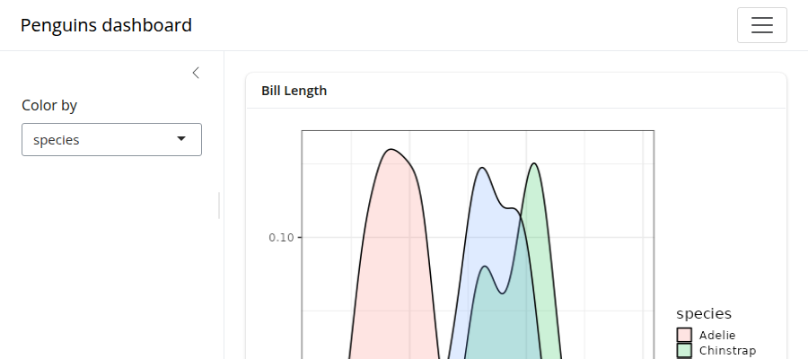
Be wary that page_navbar()’s sidebar
argument puts the same sidebar on every page, which may or may not be
desirable. In the sidebar article, you’ll
learn some strategies for keeping the sidebar’s contents close to the
elements they affect. Specifically, that article covers how to: (1) hide/show
sidebar contents on particular pages, (2) put a particular
sidebar() with a given page, and even (3) put sidebar layouts
inside of a card().
Multi-panel
Multiple nav_panel()s don’t necessarily need to go
directly into page_navbar(). They can also be consumed by
any navset_*() component, including
navset_card_underline().
ui <- page_sidebar(
title = "Penguins dashboard",
sidebar = color_by,
navset_card_underline(
title = "Histograms by species",
nav_panel("Bill Length", plotOutput("bill_length")),
nav_panel("Bill Depth", plotOutput("bill_depth")),
nav_panel("Body Mass", plotOutput("body_mass"))
)
)
shinyApp(ui, server)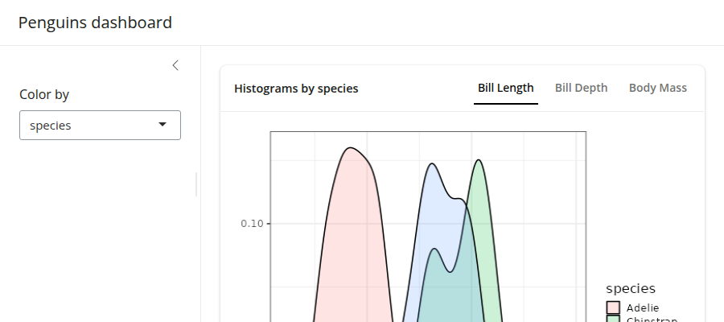
Multi-panel layouts
See here to learn more about multi-panel layout options.
Scrolling vs filling
Both page_sidebar() and page_navbar()
default to a filling layout, meaning that
outputs like plotOutput(), htmlwidgets, etc.
are encouraged to grow/shrink to fit the browser window. As a result,
when contents have an large intrinsic minimum height (e.g., a long
textual description), filling layout may cause cards/outputs to
grow/shrink beyond what is desirable. To combat this, consider setting a
height on card()s that shouldn’t grow/shrink
and min_height/max_height on
card()s that shouldn’t shrink/grow beyond a certain
point.
ui <- page_sidebar(
title = "Penguins dashboard",
sidebar = color_by,
card(min_height = 200, plotOutput("bill_length")),
card(height = 200, lorem::ipsum(15))
)
shinyApp(ui, server)Filling layout may not be desirable when there are a lot of outputs
to display on a single page. In this case, consider setting
fillable = FALSE to prevent growing/shrinking altogether.
When the page layout is not fillable, outputs will fall
back to their intrinsic height, which is usually 400px. Users will be
able to scroll the page if the outputs take up more vertical space than
the height of the window.
ui <- page_sidebar(
title = "Penguins dashboard",
sidebar = color_by,
fillable = FALSE,
!!!cards
)
shinyApp(ui, server)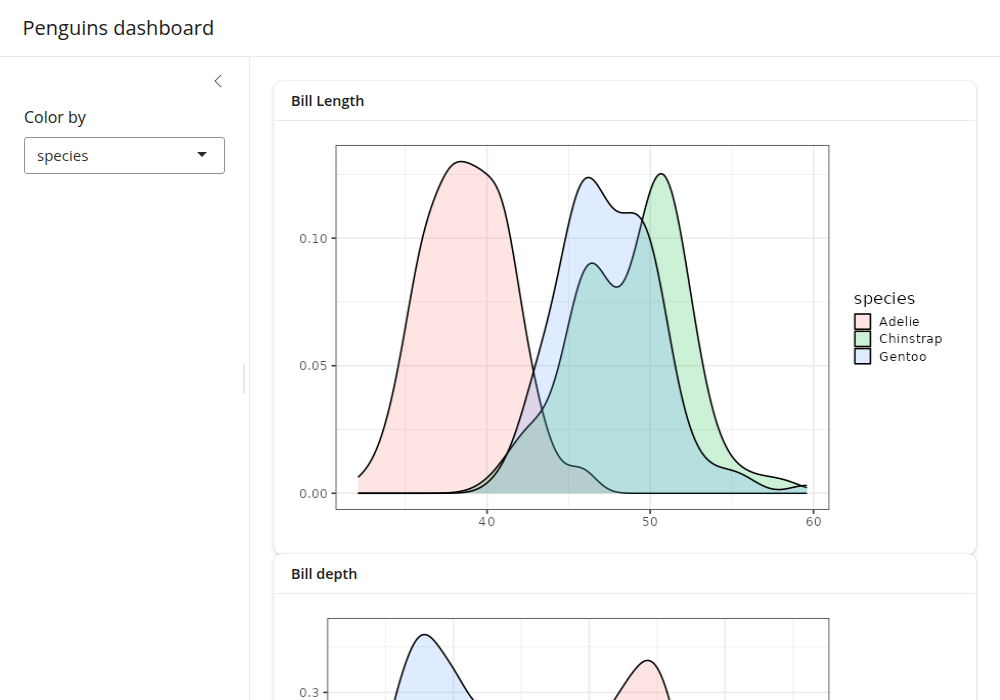
A note on page_navbar()
Like page_sidebar(), page_navbar() also has
a fillable argument which also defaults to
TRUE, which makes every page (i.e.,
nav_panel()) fillable. To make just a subset of pages
fillable, pass a vector of page names to fillable (e.g.,
fillable = c("Bill Length", "Bill Depth")). To make
all pages non-fillable, set fillable = FALSE.
Mobile layout
By default, filling layout is not enabled on mobile devices, meaning
that fillable is effectively FALSE in that
case. To enable filling layout on mobile devices, set
fillable_mobile = TRUE. In this case, it’s good practice to
set min_height on card()s to prevent them from
growing/shrinking beyond what is desirable.
Also, sidebars are collapsed by default on mobile devices, but they
can be opened via sidebar()’s open
argument.
ui <- page_sidebar(
title = "Penguins dashboard",
sidebar = color_by,
fillable_mobile = TRUE,
card(min_height = 200, plotOutput("bill_length")),
card(height = 200, lorem::ipsum(15))
)
shinyApp(ui, server)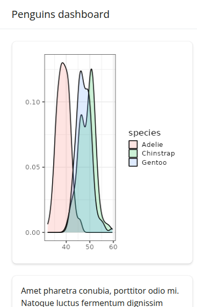
Components
Value boxes
A value_box() is a special kind of card designed for
highlighting a value along with a title and a showcase
placeholder (typically a bsicons icon). They are covered
in more detail in the value boxes article,
but here’s a palmerpenguins example:
means <- colMeans(
penguins[c("bill_length_mm", "bill_depth_mm", "body_mass_g")],
na.rm = TRUE
)
ui <- page_sidebar(
title = "Penguins dashboard",
sidebar = color_by,
layout_columns(
fill = FALSE,
value_box(
title = "Average bill length",
value = scales::unit_format(unit = "mm")(means[[1]]),
showcase = bsicons::bs_icon("align-bottom")
),
value_box(
title = "Average bill depth",
value = scales::unit_format(unit = "mm")(means[[2]]),
showcase = bsicons::bs_icon("align-center")
),
value_box(
title = "Average body mass",
value = scales::unit_format(unit = "g", big.mark = ",")(means[[3]]),
showcase = bsicons::bs_icon("handbag")
)
),
layout_columns(
cards[[1]], cards[[2]]
),
cards[[3]]
)
shinyApp(ui, server)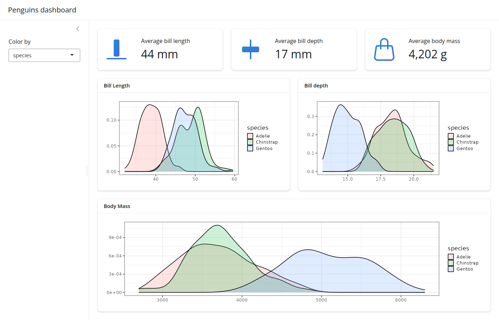
Accordions
An accordion() uses vertical collapsing to provide
scalable navigation through many sections of content. Accordions can be
placed anywhere on the page, including to a sidebar, which
is convenient for grouping sections of input controls. Learn more about
accordions on their reference
page.
ui <- page_sidebar(
title = "Penguins dashboard",
sidebar = sidebar(
bg = "white",
accordion(
accordion_panel(
"Primary controls",
color_by
),
accordion_panel(
"Other controls",
"Other controls go here"
)
)
),
accordion(
open = c("Bill Length", "About"),
accordion_panel(
"Bill Length",
plotOutput("bill_length")
),
accordion_panel(
"Bill Depth",
plotOutput("bill_depth")
),
accordion_panel(
"Body Mass",
plotOutput("body_mass")
)
)
)
shinyApp(ui, server)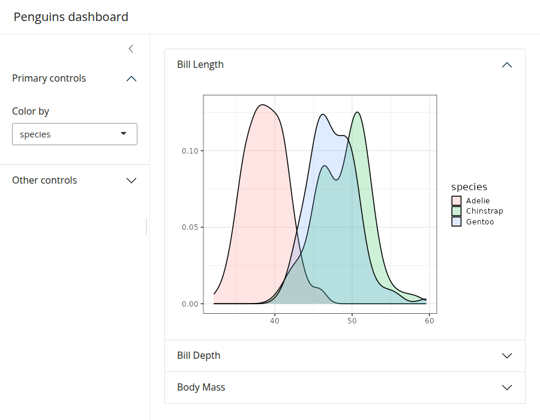
Cards with sidebars
We’ve already seen how the sidebar argument of
page_sidebar() and page_navbar() yields a
“page-level” sidebar layout, but they can also be made at the
“component-level” via layout_sidebar(). This is especially
useful for keeping input controls near the outputs they affect in more
complex apps. layout_sidebar() also works inside of a
card(), making it easy to add headers, footers,
full_screen behavior, etc.
To learn more, visit the cards and sidebars articles.
ui <- page_sidebar(
title = "Penguins dashboard",
sidebar = sidebar(
title = "Global controls",
color_by
),
card(
full_screen = TRUE,
card_header("Bill Length"),
layout_sidebar(
sidebar = sidebar(
title = "Local controls",
position = "right",
"..."
),
plotOutput("bill_length")
)
),
cards[[2]],
cards[[3]],
)
shinyApp(ui, server)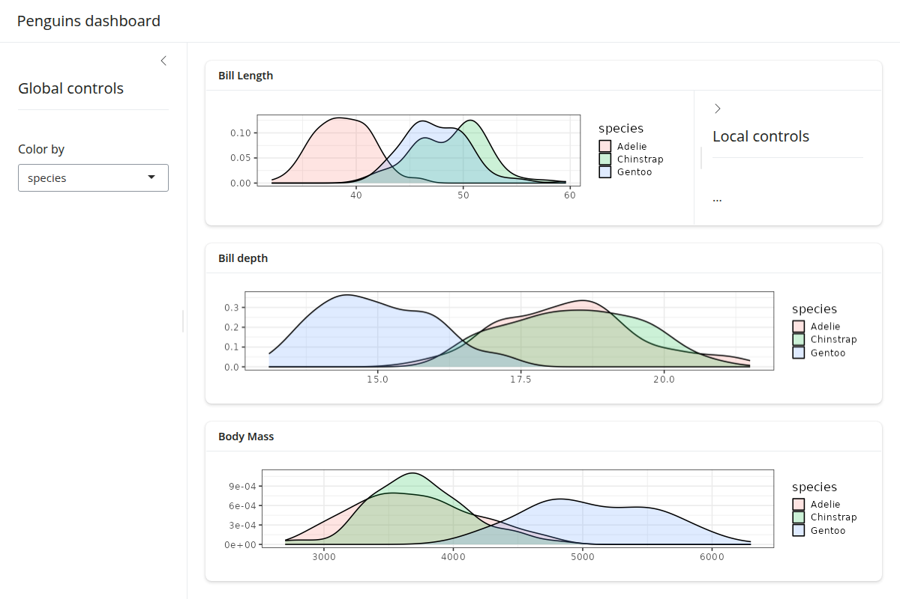
Theming
In the getting started with theming article,
you’ll learn some general theming strategies that also translate to
dashboards. That is, by passing a bs_theme() object to the
theme argument of page_sidebar() (or
page_navbar()), we can add a Bootswatch theme, easily use Google Fonts, customize 100s of theming variables, and much more. Keep in
mind, however, that bs_theme() only customizes CSS styles.
So, if you want plotOutput()s to match the CSS, consider
using the thematic package to translate the styles to
ggplot2::theme() settings. When doing so, also be aware
that “complete” ggplot2 themes (e.g.,
theme_bw()) only work sensibly when setting them globally
(i.e., theme_set(theme_bw())).
ui <- page_sidebar(
title = "Penguins dashboard",
sidebar = color_by,
theme = bs_theme(
bootswatch = "darkly",
base_font = font_google("Inter"),
navbar_bg = "#25443B"
),
!!!cards
)
# Enable thematic
thematic::thematic_shiny(font = "auto")
# Change ggplot2's default "gray" theme
theme_set(theme_bw(base_size = 16))
# New server logic (removes the `+ theme_bw()` part)
server <- function(input, output) {
gg_plot <- reactive({
ggplot(penguins) +
geom_density(aes(fill = !!input$color_by), alpha = 0.2) +
theme(axis.title = element_blank())
})
output$bill_length <- renderPlot(gg_plot() + aes(bill_length_mm))
output$bill_depth <- renderPlot(gg_plot() + aes(bill_depth_mm))
output$body_mass <- renderPlot(gg_plot() + aes(body_mass_g))
}
shinyApp(ui, server)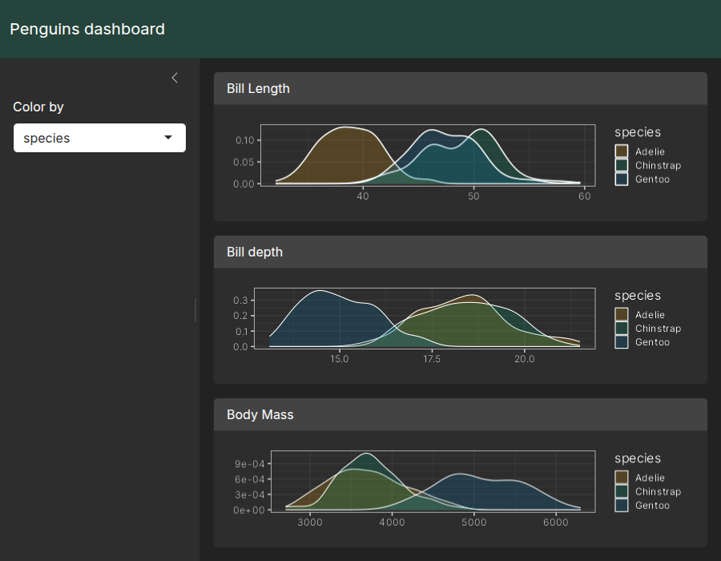
In production
Before deploying a dashboard to production, it’s wise to “hard-code”
the version of Bootstrap used when it was developed. This reduces the
chance of the dashboard breaking if and when bslib updates
it’s Bootstrap dependency. To do so, call version_default()
to get the current version of Bootstrap, then pass that value to
bs_theme(version = ...) (and pass that theme object to the
theme argument of the relevant page_*()
function).
library(shiny)
ui <- page_sidebar(
theme = bs_theme(version = 5),
...
)
shinyApp(ui, function(...) {})